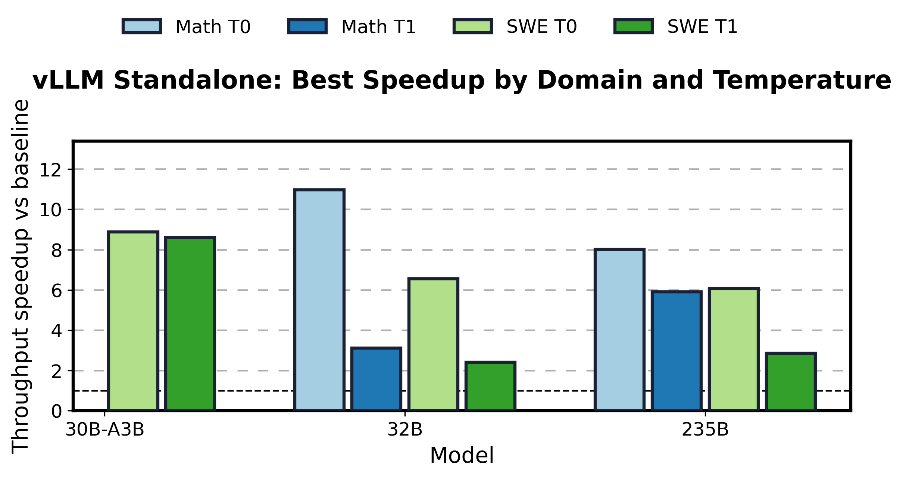
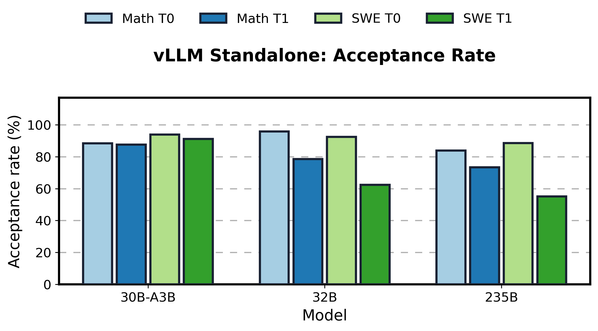
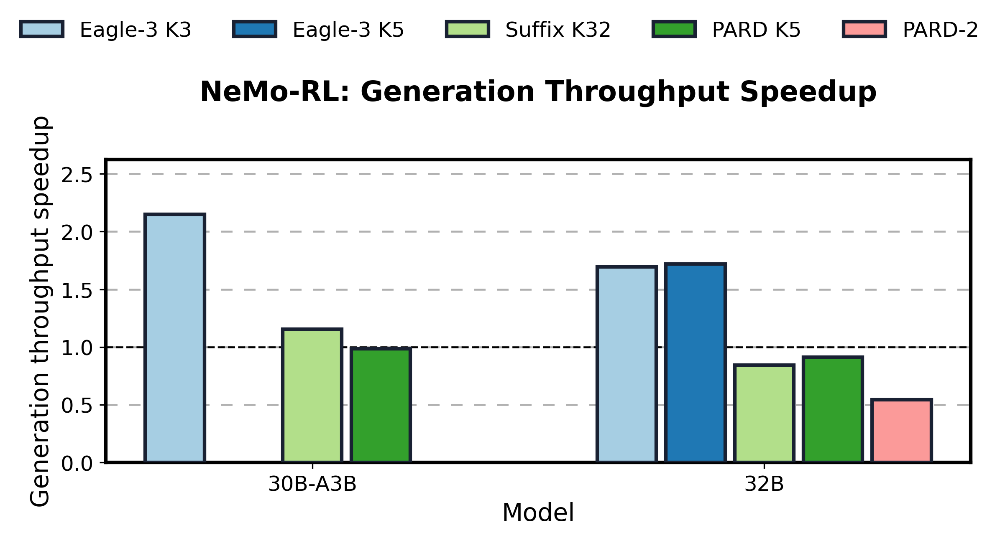
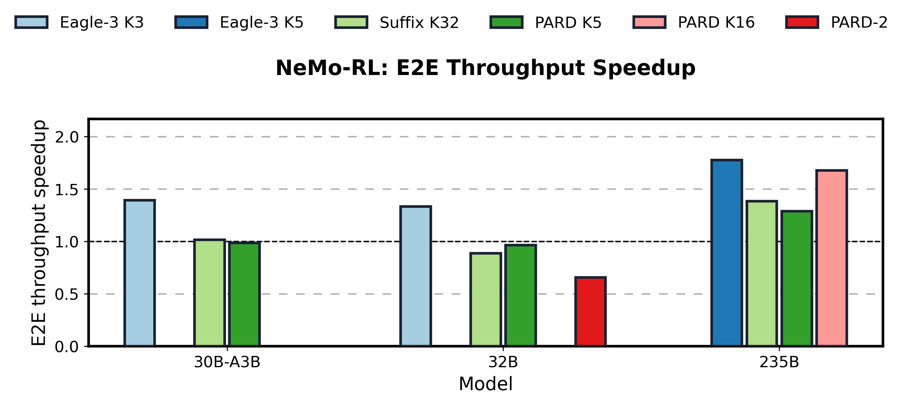
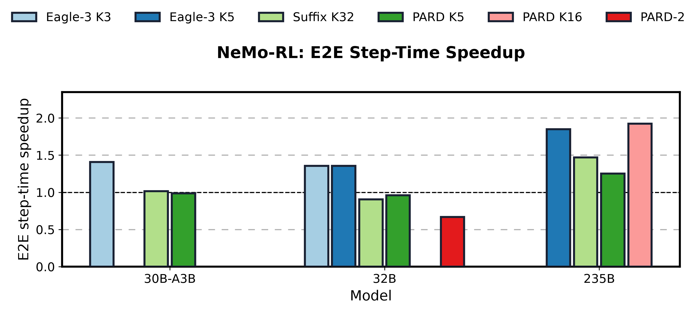

SpecDec RL Benchmark Dashboard
Updated 2026-07-12 18:34:41 PDT. This Pages entry point mirrors the latest local vLLM standalone and NeMo-RL benchmark artifacts for Qwen3 speculative decoding.
Batch sweeps and temp 0/1 comparisons with ISL/OSL shown in the result tables.
Qwen30/32 use recipe OSL4096; Qwen235B PR2879 rows use recipe OSL8192.
2175770HF download job state: COMPLETED
Primary Links
Report Hub
These buttons preserve the broader local HTML archive. The latest vLLM page is intentionally scoped to matched ISL4096/OSL32768 comparisons; older pages keep historical, partial, long-OSL, and diagnostic context separate.
DynamicSD (vLLM 0.24)
Dynamic speculative decoding under synchronous RL rollout: BSxK profiling grids, derived K schedules, and baseline/fixed-K/DynamicSD rollout comparisons.
vLLM Standalone
Standalone vLLM benchmark views for Math/SWE, temperature 0/1, batch sweeps, and Qwen235B focused diagnostics.
Historical, diagnostic, and dated pages
NeMo-RL
NeMo-RL performance recipe and SpecDec integration pages, including live Lyris and OCI-HSG status snapshots.
Historical, diagnostic, and dated pages
Broad Dashboards And Background
Cross-cutting dashboards, clean summaries, and older background reports that preserve context outside the latest matched matrix.
Historical, diagnostic, and dated pages
vLLM Standalone Charts
Each bar uses the best valid matched-baseline row available for that model/domain/temperature cell. The table below keeps the method, batch size, ISL, and OSL visible.


Best vLLM Standalone Rows
Best rows are selected by matched baseline speedup for each model, domain, and temperature.
| Domain | Model | Temp | Method | BS | ISL/OSL | tok/s/GPU | Speedup | Acceptance | Mean accept len | Source |
|---|---|---|---|---|---|---|---|---|---|---|
| Math | Qwen3-235B-A22B | 0.0 | suffix_k32 | 1 | 4096/32768 | 15.31 | 8.00x | 83.8% | 7.82 | vllm_standalone_all_batches_combined_20260619.csv |
| Math | Qwen3-235B-A22B | 1.0 | suffix_k32 | 2 | 4096/32768 | 23.18 | 5.90x | 73.4% | 6.52 | vllm_standalone_all_batches_combined_20260619.csv |
| SWE | Qwen3-235B-A22B | 0.0 | suffix_k32 | 1 | 4096/32768 | 15.18 | 7.39x | 88.5% | 7.57 | vllm_standalone_added_results_latest.csv |
| SWE | Qwen3-235B-A22B | 1.0 | suffix_k32 | 1 | 4096/32768 | 6.10 | 2.86x | 55.1% | 3.12 | vllm_standalone_all_batches_combined_20260619.csv |
| Math | Qwen3-30B-A3B | 0.0 | suffix_k32 | 1 | 4096/32768 | 143.19 | 7.39x | 88.4% | 7.85 | vllm_standalone_added_results_latest.csv |
| Math | Qwen3-30B-A3B | 1.0 | suffix_k32 | 1 | 4096/32768 | 144.23 | 7.45x | 87.6% | 7.66 | vllm_standalone_added_results_latest.csv |
| SWE | Qwen3-30B-A3B | 0.0 | suffix_k32 | 1 | 4096/32768 | 176.72 | 9.03x | 93.9% | 10.01 | vllm_standalone_added_results_latest.csv |
| SWE | Qwen3-30B-A3B | 1.0 | suffix_k32 | 1 | 4096/32768 | 168.53 | 8.61x | 91.2% | 9.46 | vllm_standalone_all_batches_combined_20260619.csv |
| Math | Qwen3-32B | 0.0 | suffix_k32 | 1 | 4096/32768 | 71.80 | 10.97x | 95.8% | 10.40 | vllm_standalone_all_batches_combined_20260619.csv |
| Math | Qwen3-32B | 1.0 | suffix_k32 | 8 | 4096/32768 | 194.02 | 3.11x | 78.5% | 6.24 | vllm_standalone_all_batches_combined_20260619.csv |
| SWE | Qwen3-32B | 0.0 | suffix_k32 | 4 | 4096/32768 | 222.13 | 6.55x | 92.5% | 9.69 | vllm_standalone_all_batches_combined_20260619.csv |
| SWE | Qwen3-32B | 1.0 | suffix_k32 | 2 | 4096/32768 | 39.60 | 2.42x | 62.3% | 4.06 | vllm_standalone_all_batches_combined_20260619.csv |
NeMo-RL Baseline-Relative Charts
Sync-mode rows with parsed matched-baseline metrics are plotted. Qwen30/32 are performance recipe OSL4096; Qwen235B is latest nightly/PR2879 with vLLM 0.20 path and recipe OSL8192.



Best NeMo-RL Rows
Best rows are selected by generation throughput speedup against the matched baseline. E2E throughput and step-time speedup are shown separately.
| Job | Model | Mode | Method | Completed | Max OSL | Gen tok/s/GPU | Gen TPS speedup | Gen time speedup | E2E TPS speedup | E2E step speedup | Acceptance | Mean accept len | Source |
|---|---|---|---|---|---|---|---|---|---|---|---|---|---|
2172802 | Qwen3-235B-A22B | sync | eagle3_k5 | 19/20 | 8192 | 31.58 | 1.81x | 1.89x | 1.78x | 1.85x | n/a | n/a | lyris_qwen235b_pr2879_live_enriched_20260621.csv |
2152193 | Qwen3-30B-A3B | sync | Eagle-3 | 19/20 last 20 | 4096 | 3226.28 | 2.15x | 2.18x | 1.39x | 1.41x | 63.9% | 2.87 | lyris_nemorl_perfcfg_step20_live_speedups_20260618.csv |
2177869 | Qwen3-32B | sync | eagle3_k5 | 19/20 last 20 | 4096 | 2159.11 | 1.72x | 1.74x | 1.33x | 1.36x | 30.3% | 2.39 | lyris_nemorl_perfcfg_specdec_combined_latest.csv |
DFlare and AngelSlim Status
8 completed target-profile DFlare job(s) produced 12 performance row(s). 16 failure/status row(s) remain separate, including 3 TIMEOUT row(s). Latest performance row: YaRN total-128K Math temp=1.0, 10.06 tok/s/GPU, 49.14% acceptance, mean accepted length 8.37, job 2272941.
Open the vLLM-native section, open the completed DFlare table, or open the failure/status table. DFlare uses AngelSlim's standalone runtime and is kept separate from vLLM-native speedups.
DFlare public checkpoints staged here include AngelSlim/Qwen3-4b-dflare, AngelSlim/Qwen3-8b-dflare, and AngelSlim/Gpt-oss-20b-dflare.
Models requested in staging job: AngelSlim/Qwen3-a3B_eagle3 AngelSlim/Qwen3-32B_eagle3 AngelSlim/Qwen3-8B_eagle3 AngelSlim/Qwen3-14B_eagle3 AngelSlim/Qwen3-4B_eagle3 AngelSlim/Qwen3-4b-dflare AngelSlim/Qwen3-8b-dflare AngelSlim/Gpt-oss-20b-dflare
Logs: /lustre/fsw/coreai_dlalgo_llm/users/sna/vllm-benchmark/vllm-runs/angelslim_checkpoint_prewarm_lyris_20260622
Summary JSON: /lustre/fsw/coreai_dlalgo_llm/users/sna/vllm-benchmark/vllm-runs/angelslim_checkpoint_prewarm_lyris_20260622/prewarm_summary.json